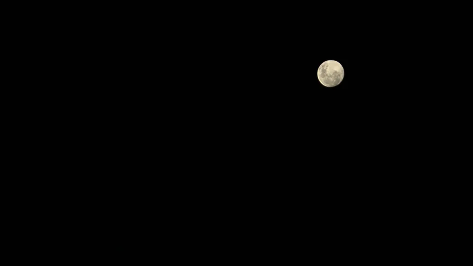 Lua cheia em 55mm f/5.6 1/160 ISO 100T5i EF-S 18-55, 4 de abril de 2023
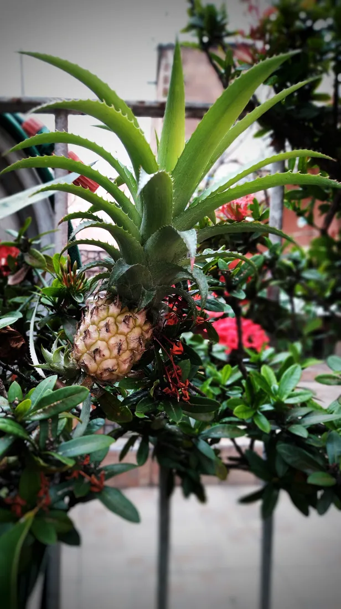 2 de abril de 2023
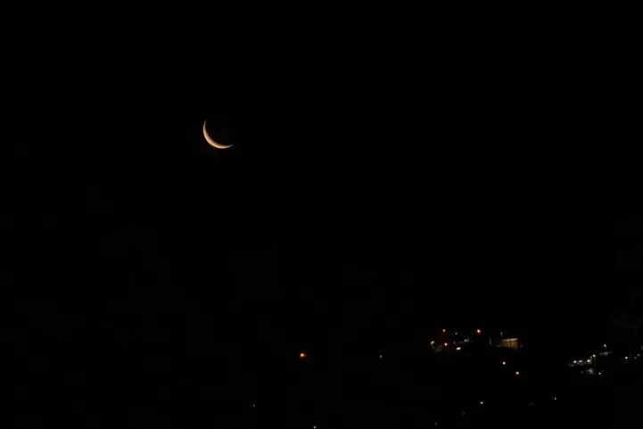 Lua minguante em 55mm f/8.0 0.3" ISO 100T5i EF-S 18-55, 24 de março de 2023Morro Dois IrmãosPraia de Ipanema, Rio de Janeiro, 21 de fevereiro de 2023Cachorro andarilhoBichinho, Prados, Minas Gerais, 21 de janeiro de 2023Serra de São JoséTiradentes, Minas Gerais, 20 de janeiro de 2023Cachorro no restauranteTiradentes, Minas Gerais, 20 de janeiro de 2023
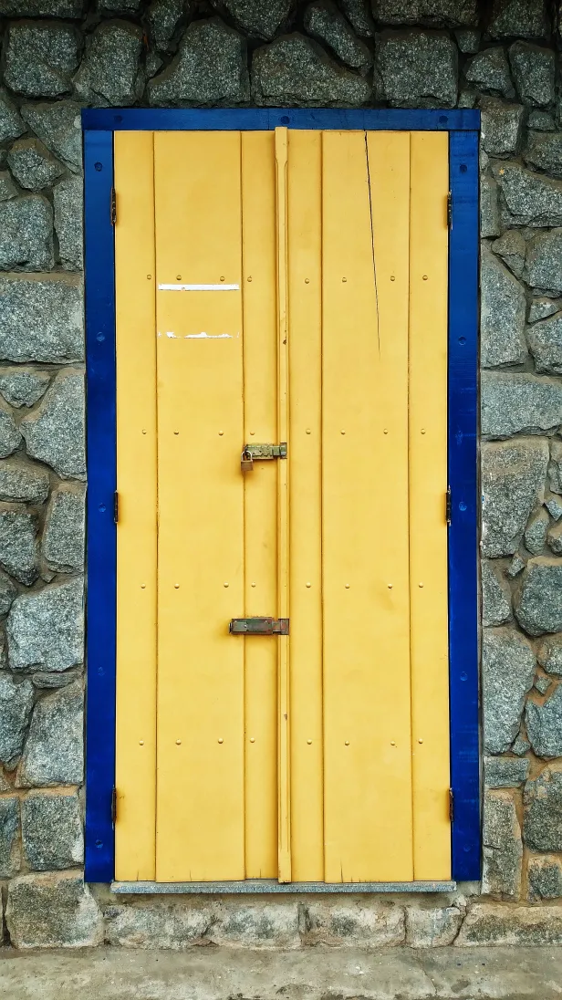 Tiradentes, Minas Gerais20 de janeiro de 2023
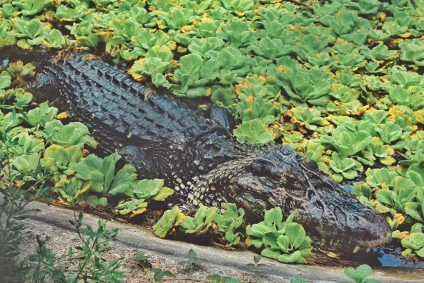 18 de outubro de 2022BlueAmazon Tupana Lodge, Amazonas, 17 de outubro de 2022PlutoAmazon Tupana Lodge, Amazonas, 15 de outubro de 2022Céu da manhã na AmazôniaAmazon Tupana Lodge, Amazonas, 15 de outubro de 2022Lima e Eduardo no Rio TupanaAmazon Tupana Lodge, Amazonas, 15 de outubro de 2022PitocoAmazon Tupana Lodge, Amazonas, 14 de outubro de 2022
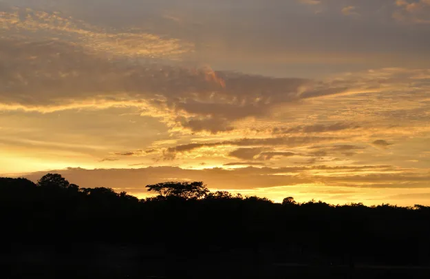 Nascer do Sol na AmazôniaAmazon Tupana Lodge, Amazonas, 14 de outubro de 2022
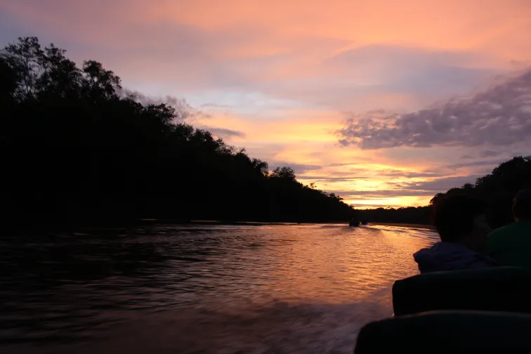 Nascer do Sol no Rio TupanaAmazon Tupana Lodge, Amazonas, 14 de outubro de 2022Alfredo Peixerico3 de abril de 2022
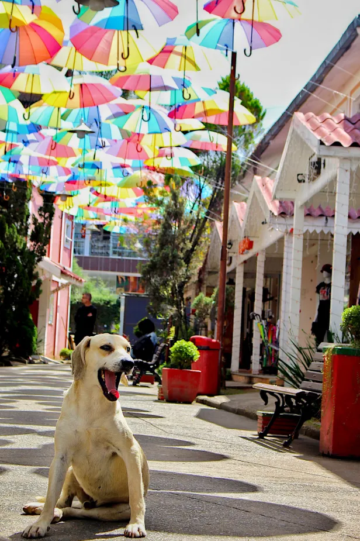 Cachorro na Pequena FinlândiaPenedo, Rio de Janeiro, 31 de agosto de 2021
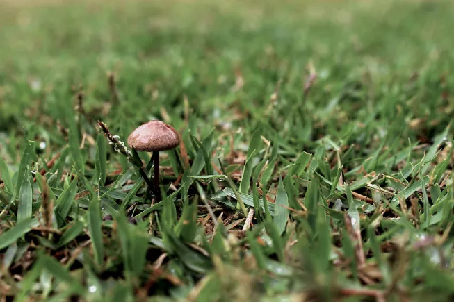 Cogumelo no jardimPenedo, Rio de Janeiro, 30 de agosto de 2021Dily e Melissa22 de agosto de 2021Paçoca15 de agosto de 2021Melissa6 de junho de 2021
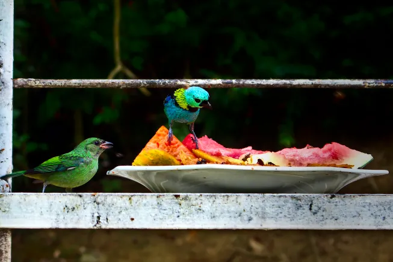 1 de janeiro de 2020Dily21 de abril de 201923 de março de 201921 de março de 2019‟All The Small Things”Jalapão, Tocantins, 21 de março de 2019
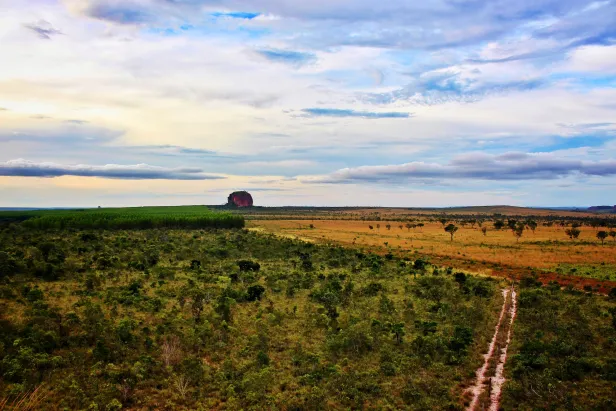 Horizonte visto da Pedra FuradaJalapão, Tocantins, 20 de março de 2019
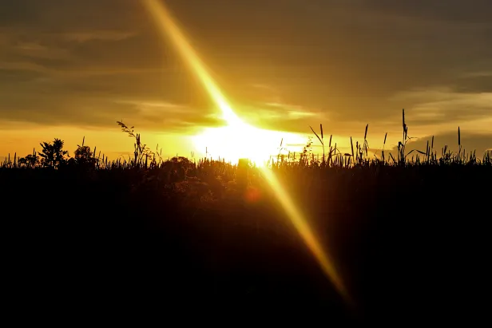 19 de março de 2019
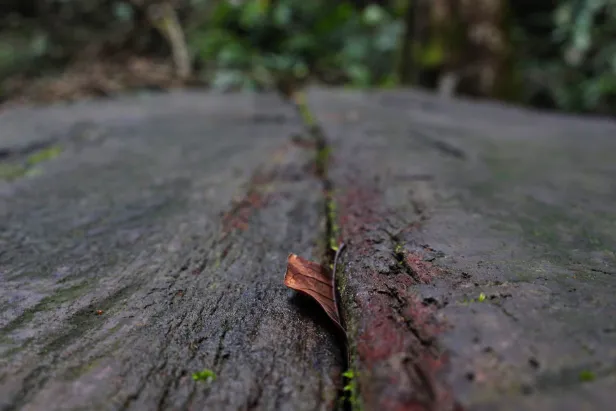 Primeira folha do outonoJalapão, Tocantins, 19 de março de 2019
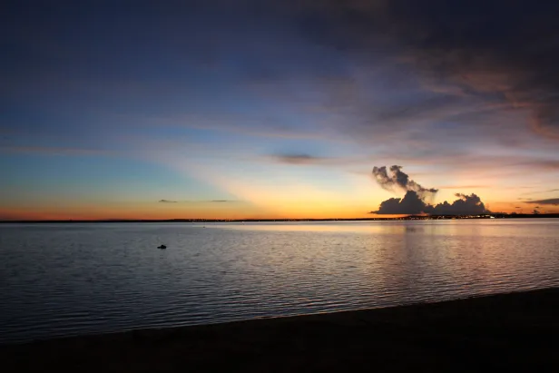 Pôr do Sol na Praia da GraciosaPalmas, Tocantins, 18 de março de 20191 de dezembro de 2018
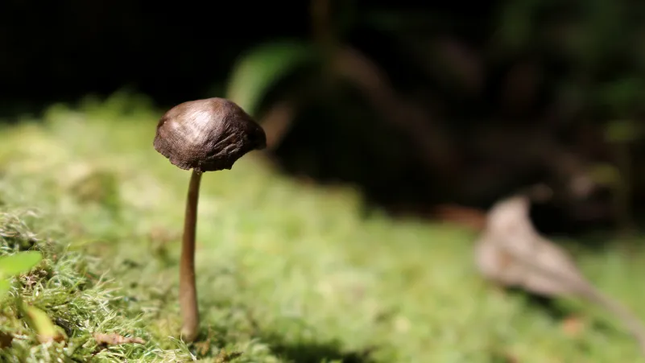 1 de setembro de 2018
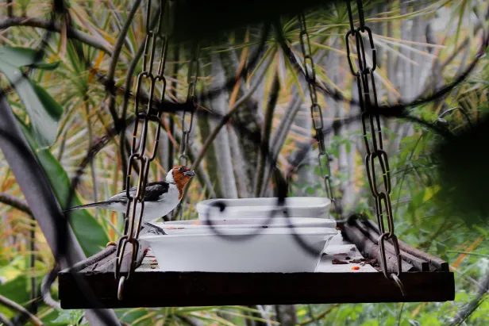 24 de março de 201821 de março de 201820 de março de 2018Calango no Rio RoncadorChapada Diamantina, Bahia, 19 de março de 2018Parque Estadual Campos do JordãoSão Paulo, 25 de março de 2017Cerrado até o horizonteBonito, Mato Grosso do Sul, 13 de agosto de 2015LaraBonito, Mato Grosso do Sul, 11 de agosto de 20152 de janeiro de 2012"Steel Life"27 de abril de 2008Yuri24 de março de 2008Gasparzinho5 de março de 2008Floor Jansen, After ForeverCirco Voador, Rio de Janeiro, 15 de outubro de 2006Barney25 de julho de 2006Fred22 de maio de 2006‟Françoise et Richard”Praia de Ipanema, Rio de Janeiro, 10 de março de 2006Barney bebê8 de outubro de 2005Fred bebê8 de outubro de 2005
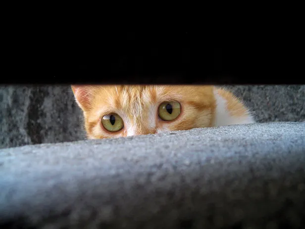 Loira procurando uma casa nova para ter seus filhotes2 de julho de 2005
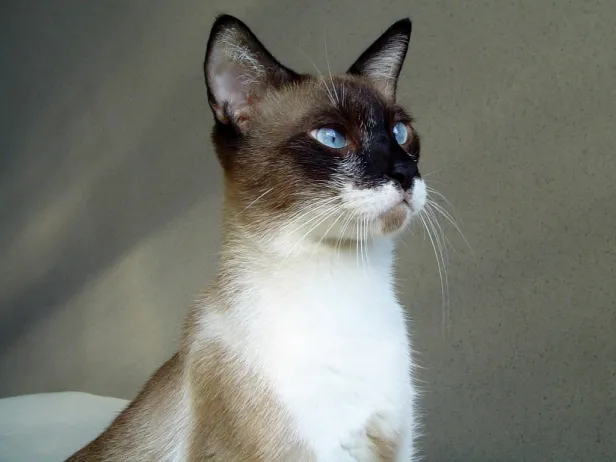 Yuri13 de abril de 2005